| No. | Figure | Section | Status |
| Fig. 1 | Federated Knowledge Graph Ecosystem | §1 Introduction | new figure ready |
| Fig. 2 | Ogham stone in Wikidata and the fuzzy-sl Wikibase | §5.1 Wikidata | new figure ready |
| Fig. 3 | Schematic data model of the fuzzy-sl Wikibase | §5.2 fuzzy-sl | new figure ready |
| Fig. 4 | Campanian Ignimbrite findspots in the fuzzy-sl Wikibase | §5.2 fuzzy-sl | new figure ready |
| Fig. 5 | The bb5kbc ontology (spatial part) | §5.3 BB-5KBC | new figure ready |
| Fig. 6 | Ontology scheme of the palaeoclimate pipeline | §5.4 Pipeline | new figure ready |
| Fig. 7 | CI instances | §5.4 Pipeline | new figure ready |
| Fig. 8 | Big Exchange meta path | §5.6 HIN | keep as submitted |
| Fig. 9 | ArNO ontology modules | §5.7 HIN to KG | new figure ready |
| Fig. 10 | Mapping of HIN node types to ArNO classes | §5.7 HIN to KG | new figure ready |
| Z2 | One Ogham stone in five modelling styles | §3 or §4 (placement open) | new figure ready |
| Z3 | Where the showcases are | §5 (overview) | new figure ready |
Fig. 1 Federated Knowledge Graph Ecosystem new figure ready
§1 Introduction

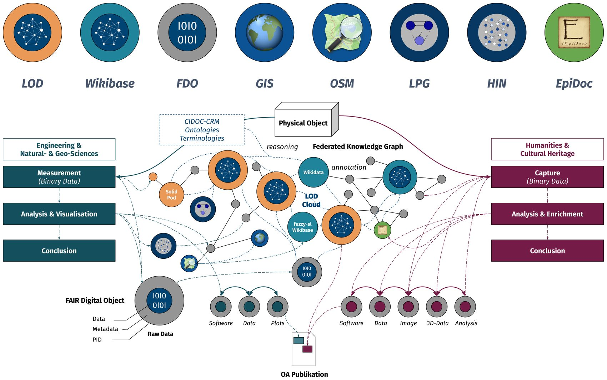
Scheme of the Federated Knowledge Graph Ecosystem. Licence -- Florian Thiery & Andreas Noback, CC BY 4.0

Scheme of the Federated Knowledge Graph Ecosystem. Licence: Florian Thiery & Andreas Noback, CC BY 4.0.
- Source: thiery_stones_2026, Fig. 1
- Typo Publikation corrected by Flo (OA Publication), margin enlarged on all sides; the figure is his own drawing, so it is only re-exported here (2400 px wide)
Fig. 2 Ogham stone in Wikidata and the fuzzy-sl Wikibase new figure ready
§5.1 Wikidata

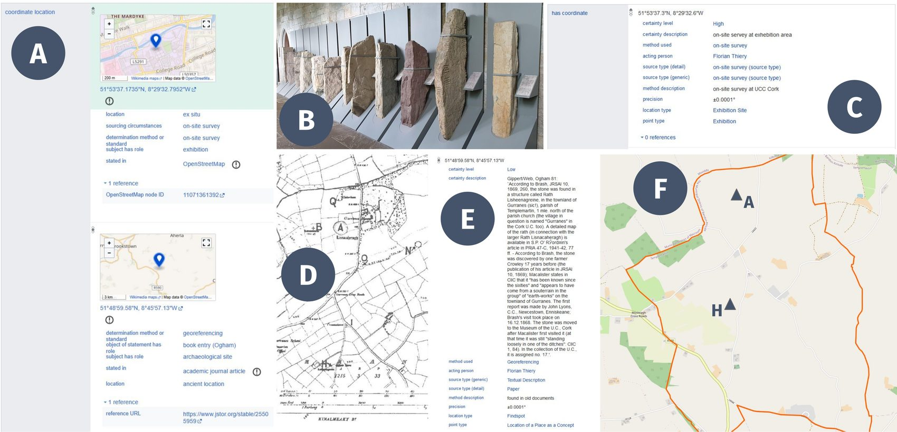
Ogham Stone CIIC 81 and its spatial locations in Wikidata and the fuzzy-sl Wikibase. Licence -- Florian Thiery, CC BY 4.0; (A) Wikidata Community, Public Domain; (B) Florian Thiery, CC BY-NC-SA 4.0; (C/E) Research Squirrel Engineers Network, CC BY 4.0; (E) \copyright~\'O R\'{\i}ord\'ain and Ryan; (F) OpenStreetMap Contributors, Open Database License.

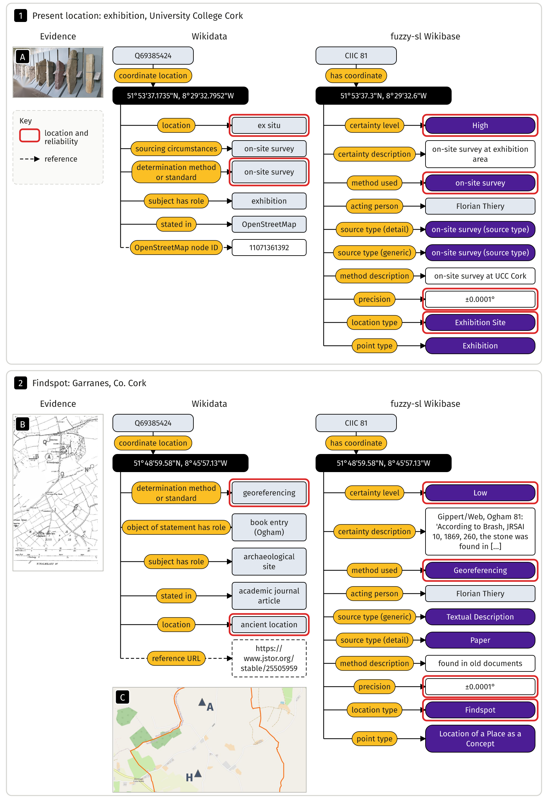
Ogham Stone CIIC 81 [Mac45, pp. 83-84] and its two spatial locations in Wikidata and in the fuzzy-sl Wikibase. (1) Present location in the exhibition at University College Cork; (2) findspot at Garranes. Left: evidence, (A) photograph of the exhibition, (B) map of the rath at Garranes, (C) the area of the findspot in OpenStreetMap with the map features A and H. Middle and right: the coordinate statement of the stone with its qualifiers in Wikidata (item Q69385424) and in the fuzzy-sl Wikibase. Wikidata records how the location was determined with a few qualifiers; the fuzzy-sl Wikibase adds certainty level, method, source type, precision, location type and point type to every coordinate. Grey: items; purple: vocabulary terms; white: literals; amber: properties; dashed: reference of the statement; red frames: location, method and reliability of the location. The long certainty description of the findspot is shortened. Licence: Florian Thiery, CC BY 4.0; (A) Florian Thiery, CC BY-NC-SA 4.0; (B) (c) O Riordain and Ryan [OR41, Fig. 2; p. 80]; (C) OpenStreetMap Contributors, Open Database License; Wikidata statements: Wikidata Community, Public Domain; fuzzy-sl statements: Research Squirrel Engineers Network, CC BY 4.0.
- Reviewer C (Section 5, Figure 2): goal unclear, images should be separated and explained. New layout: one frame per location (present location, findspot); evidence on the left, Wikidata and fuzzy-sl statements as mini graphs
- The statements are transcribed from the screenshots of the old figure (Wikidata Q69385424 and the Wikibase entry could not be read from here): please check every value; typo exhebition in the source corrected; the fuzzy-sl item ID of CIIC 81 is not known (shown as CIIC 81); the long certainty description of the findspot is shortened ([...])
- Panels of the old figure: B is now A (photo), D is now B (map), F is now C (OpenStreetMap); A, C, E became the graphs; the round letter marks of the old figure were removed from the cut-outs (data/ogham, made by prep_ogham.py from img/ogham-wikidata.jpg)
- To check: the text of 5.1 says that the stones inherit the townland centroid as P625, the figure shows two stone-specific coordinates for CIIC 81; what A and H in panel C denote (map features of panel B transferred to OpenStreetMap?)
Fig. 3 Schematic data model of the fuzzy-sl Wikibase new figure ready
§5.2 fuzzy-sl

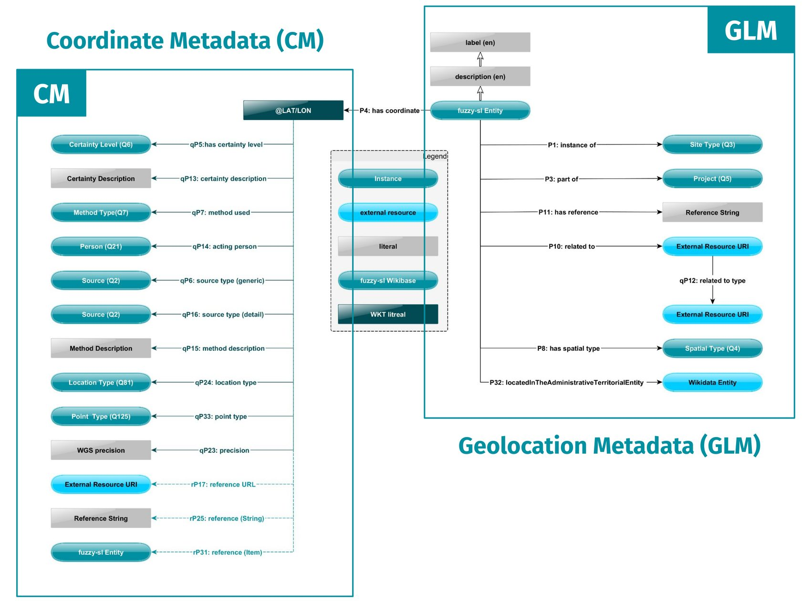
Schematic data model of the fuzzy-sl Wikibase. License -- Florian Thiery, CC BY 4.0.

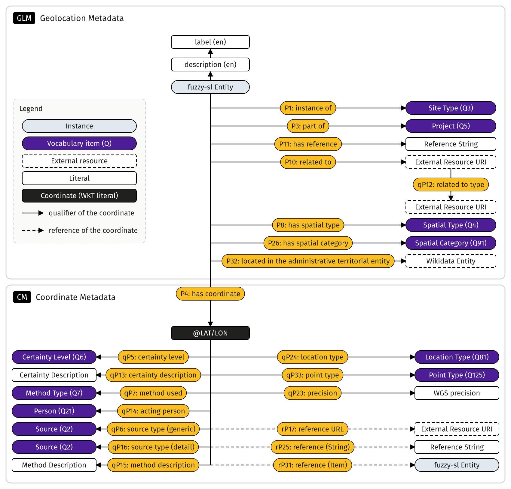
Data model of the fuzzy-sl Wikibase. (GLM) Geolocation metadata: a fuzzy-sl entity has a label and a description and is described by its instance type (P1), project (P3), literature reference (P11), related external resource with its relation type (P10, qP12), spatial type (P8), spatial category (P26), the administrative territorial entity in Wikidata (P32) and its coordinate (P4). (CM) Coordinate metadata: the coordinate statement carries ten qualifiers (solid arrows: certainty level and description, method used and description, acting person, source type in generic and detailed form, location type, point type and precision) and three reference properties (dashed arrows: reference URL, reference string, reference item). Grey: instance; purple: vocabulary item with its Q number; dashed outline: external resource; white: literal; black: coordinate. Property labels and classes are those of the static copy of the fuzzy-sl Wikibase. Licence: Florian Thiery, CC BY 4.0.
- Redrawn after the old picture (same nodes, properties and arrows); labels, datatypes and classes read from the static Wikibase copy
- Same model as Fig. 4B of Thiery et al. 2026 (JOHD 12:10); P26 (has spatial category) added because the old picture omitted it
- Layout stacked (GLM above CM) because 24 px type needs the width; the old picture placed CM left of GLM
Fig. 4 Campanian Ignimbrite findspots in the fuzzy-sl Wikibase new figure ready
§5.2 fuzzy-sl

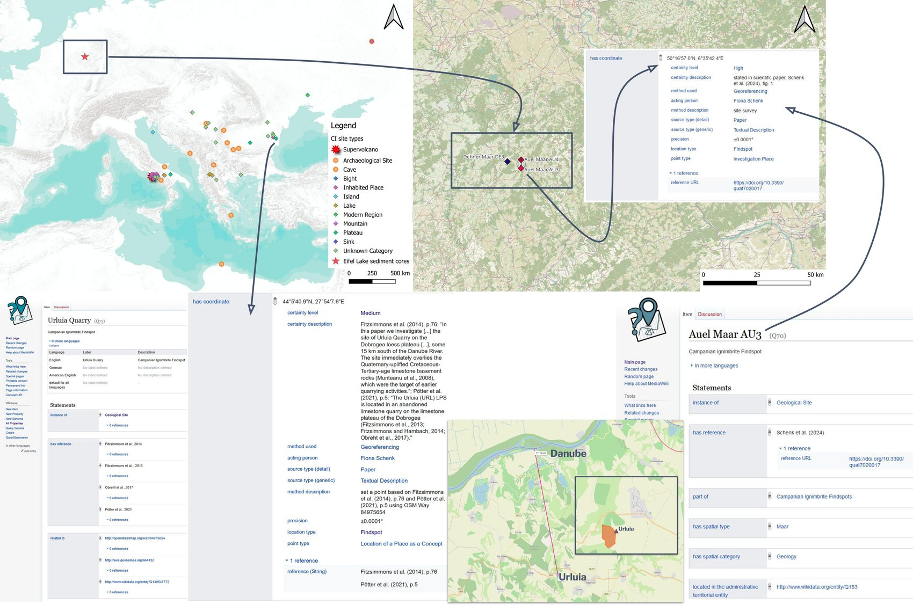
Geospatial modelling of Campanian Ignimbrite Findspots within the fuzzy-sl Wikibase. Licence -- Florian Thiery & Fiona Schenk, CC BY 4.0; OSM maps: OpenStreetMap Contributors, Open Database License.

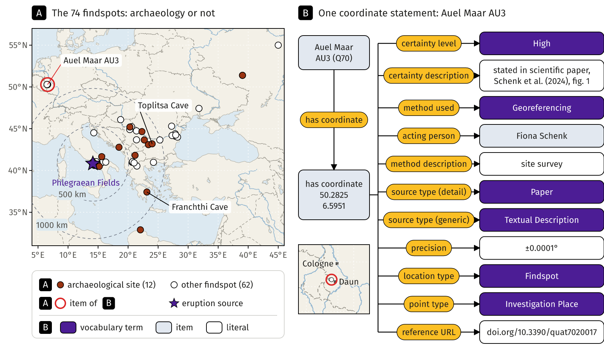
Campanian Ignimbrite findspots in the geo-lod graph and one coordinate statement in the fuzzy-sl Wikibase. (A) The 74 findspots, distinguished by whether they are typed as archaeological sites (12) or not (62); dashed rings mark 500 km and 1000 km from the Phlegraean Fields, the source area of the eruption. (B) The coordinate statement of Auel Maar AU3 (Q70) with its qualifiers: certainty level and description, method, acting person, source type, precision, location and point type, and the literature reference. Purple: vocabulary terms; grey: items; white: literals. The inset map shows the Eifel around the Auel Maar with rivers, borders, Cologne and Daun. Licence: Florian Thiery and Fiona Schenk, CC BY 4.0; base map: Natural Earth, public domain.
- v3: archaeology vs. other, Auel Maar AU3 from the static Wikibase copy, minimap
- Static Wikibase has 19 CI items, the graph 74
Fig. 5 The bb5kbc ontology (spatial part) new figure ready
§5.3 BB-5KBC

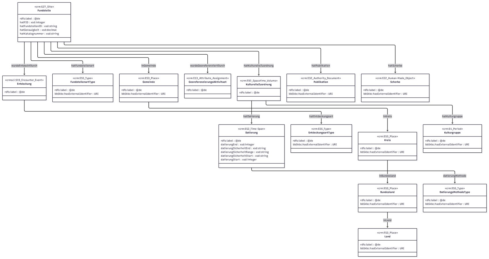
The bb5kbc Ontology. Licence -- Florian Thiery & Sophie C. Schmidt, CC BY 4.0.

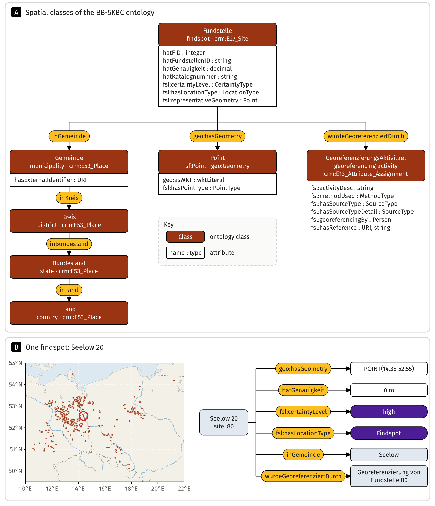
Spatial part of the BB-5KBC ontology. (A) Classes and properties around the place of a findspot: a Fundstelle (CIDOC CRM E27 Site) lies in a municipality (Gemeinde, with external identifiers such as Wikidata, GeoNames, Getty TGN and OpenStreetMap), district (Kreis), federal state (Bundesland) and country (Land); it has a GeoSPARQL point geometry with a WKT literal, and it was georeferenced by a georeferencing activity (E13 Attribute Assignment) that records method, source type and person. Dark orange: classes; white boxes: attributes with their datatypes; amber: properties. (B) One of the 540 findspots, Seelow 20 (red ring on the map), as an instance: the point geometry, its accuracy (±1000 m, because the published coordinates are rounded to two decimal places), the precision (±0.01°), the certainty level and location type from the fuzzy-sl vocabulary, the municipality and the georeferencing activity. Data: BB-5KBC bundle (commit c2e989b); base map: Natural Earth. Licence: Florian Thiery & Sophie C. Schmidt, CC BY 4.0.
- Redrawn from data/bb5kbc-bundle.ttl (bb-5kbc-public, commit c2e989b, 2026-09-15; 540 findspots); the old picture was a Mermaid class diagram
- Example findspot: Seelow 20 (site_80). The bundle still stores hatGenauigkeit 0.0; the figure shows +-1000 m (published coordinates rounded to 2 decimals, JCM 2026 slides) and a precision of +-0.01 degrees, which is not in the data yet: update bb-5kbc-public and re-check the figure
- Geo focus: only the spatial classes (Fundstelle, Gemeinde, Kreis, Bundesland, Land, Point, GeoreferenzierungsAktivitaet); the non-geo classes are omitted and could go into a supplement version
- The data model has changed since the old picture (geo:hasGeometry, fsl certainty and location type, georeferencing activity); every property is asserted against the bundle
Fig. 6 Ontology scheme of the palaeoclimate pipeline new figure ready
§5.4 Pipeline

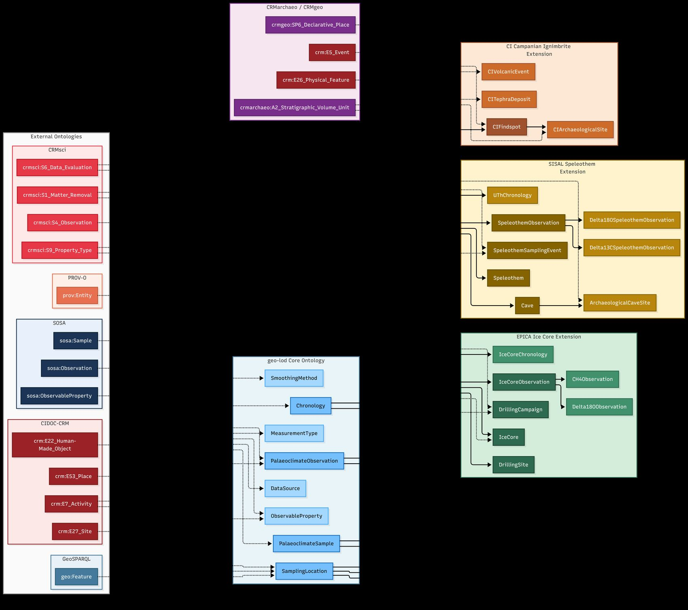
Ontology Scheme of the Palaeoclimate Data Processing Pipeline (GeoSciece-FAIRification-LOD). Licence -- Florian Thiery & Fiona Schenk, CC BY 4.0.

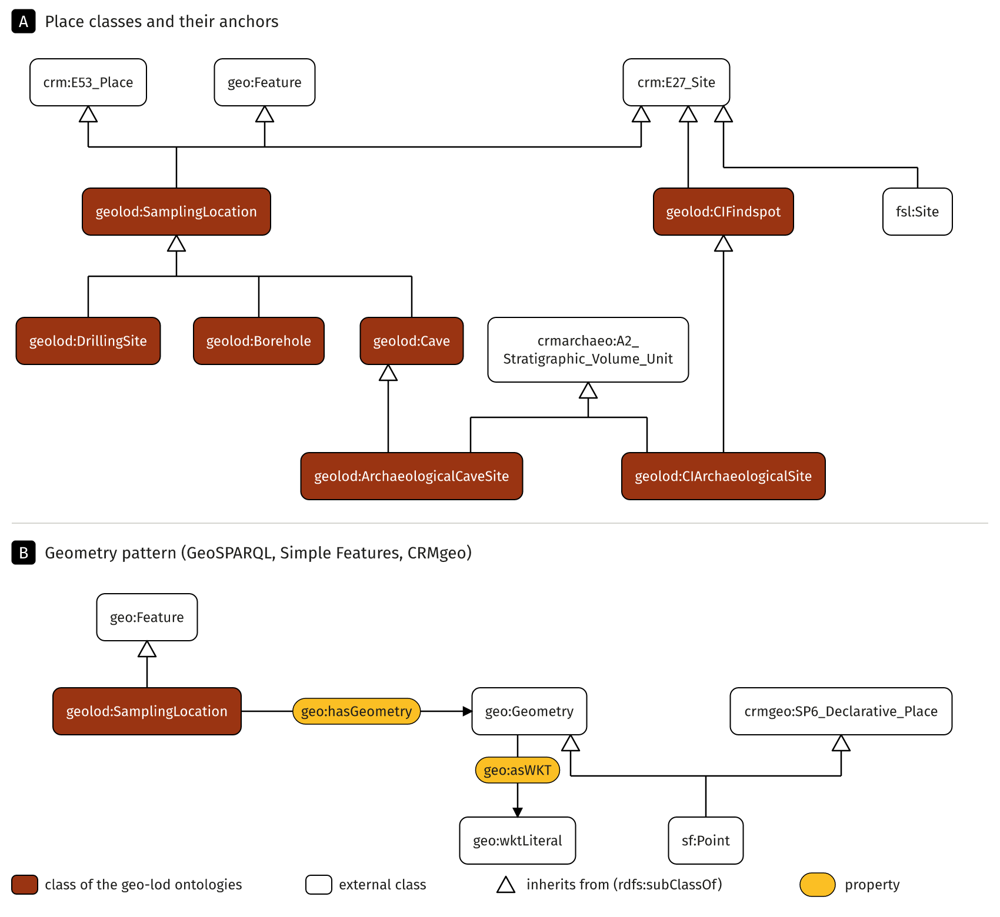
Modelling places in the geo-lod ontologies. (A) The place classes and their anchors in CIDOC CRM, CRMarchaeo and fuzzy-sl; hollow arrows are rdfs:subClassOf statements of the ontology files (geo_lod_core.ttl, crm_bridging.ttl, sisal_ontology.ttl, epica_ontology.ttl). Sampling locations (drilling site, borehole, cave) and Campanian Ignimbrite findspots both specialise crm:E27_Site; the archaeological variants additionally inherit from crmarchaeo:A2_Stratigraphic_Volume_Unit. (B) The geometry of a place: a geo:Feature has a geo:Geometry (sf:Point, which CRMgeo reads as a declarative place; its inheritance from geo:Geometry is defined by GeoSPARQL and Simple Features, not by the ontology files) whose coordinates are a geo:wktLiteral. Dark orange: classes of the geo-lod ontologies; white: external classes; amber: property. Licence: Florian Thiery and Fiona Schenk, CC BY 4.0.
- Slice: place classes and geometry pattern; the full scheme could move to the supplement
- "GeoSciece" typo disappears with the new figure
Fig. 7 CI instances new figure ready
§5.4 Pipeline

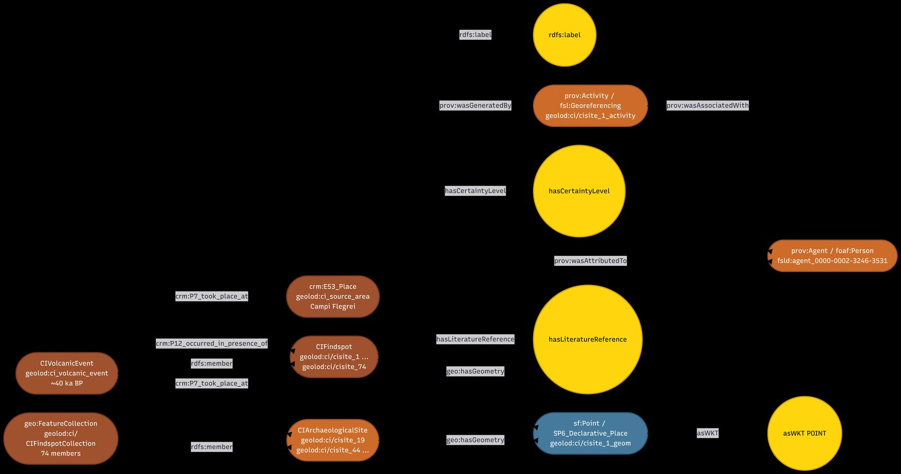
CI Instances Scheme. Licence -- Florian Thiery & Fiona Schenk, CC BY 4.0.

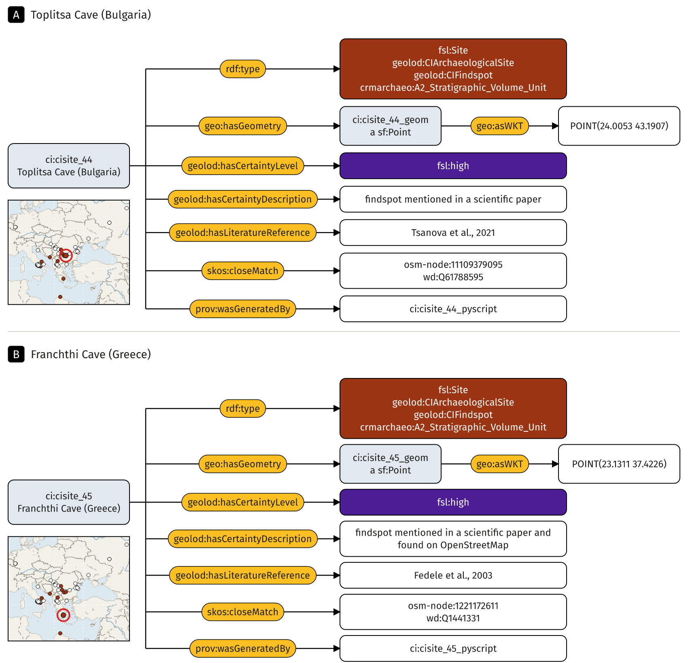
Two Campanian Ignimbrite findspots as instances in the geo-lod graph: (A) Toplitsa Cave (Bulgaria, ci:cisite_44) and (B) Franchthi Cave (Greece, ci:cisite_45). Both are typed as fsl:Site and geolod:CIArchaeologicalSite (a selection of their types is shown), carry the geometry as an sf:Point with a geo:asWKT literal and the fuzzy-sl certainty level, certainty description and literature reference, are aligned to Wikidata and OpenStreetMap via skos:closeMatch, and name the pipeline activity that generated them. The coordinate reference system prefix of the WKT literal is omitted. Colours: dark orange classes, purple vocabulary terms, grey instances, white literals. Minimaps: all 74 findspots (filled: archaeological site), the findspot of the panel ringed in red; country borders and major rivers from Natural Earth. Licence: Florian Thiery and Fiona Schenk, CC BY 4.0.
- Toplitsa and Franchthi, every value read from the graph
- Text says 9 archaeological sites, the graph has 12
Fig. 8 Big Exchange meta path keep as submitted
§5.6 HIN

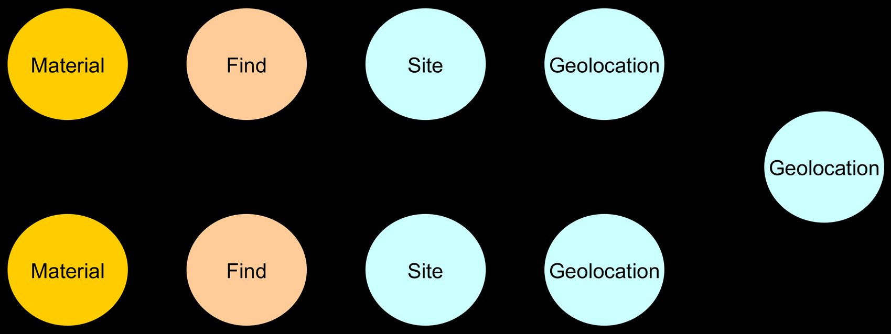
The meta path connecting two materials through finds of these materials that are found in sites with geolocations that share a spatially similar geolocation. Licence -- Mattis thor Straten et al., CC BY 4.0.
- From thor Straten et al. (CC BY 4.0); keeps its own look
Fig. 9 ArNO ontology modules new figure ready
§5.7 HIN to KG

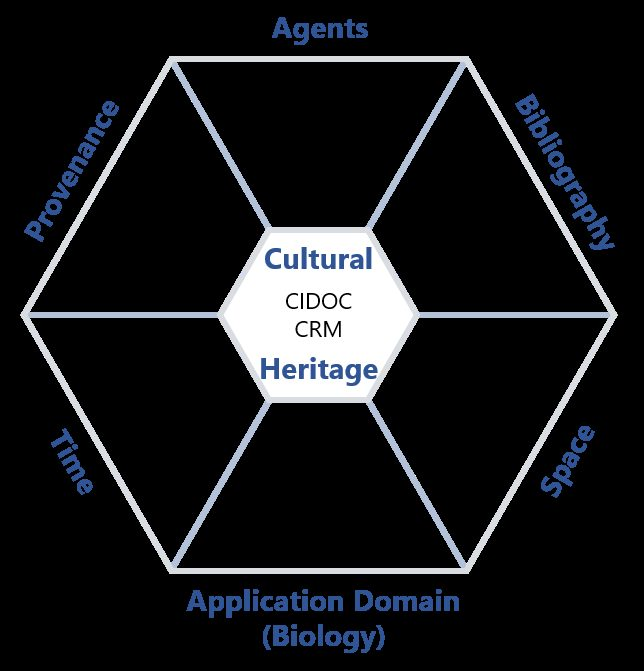
The ontologies combined in the ArNO ontology grouped by the concept domain they are used for. Licence -- Mattis thor Straten et al., CC BY 4.0.

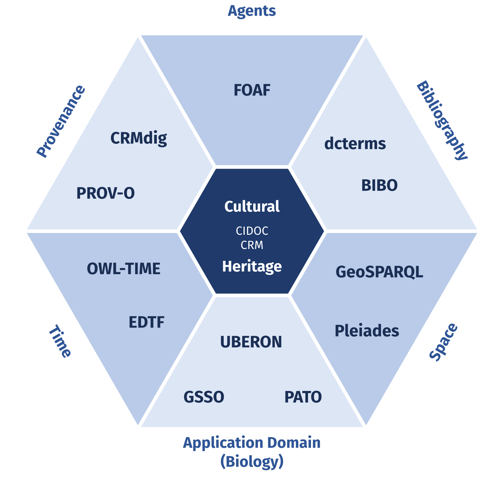
The ontologies combined in the ArNO ontology, grouped by the concept domain they are used for (redrawn after the original). Licence: Mattis thor Straten et al., CC BY 4.0.
- 1:1 redraw of the original after the screenshot Flo supplied (the 644 px file was transparent and showed no ontology names): hexagon, six domains and the twelve ontology names (FOAF, CRMdig, PROV-O, dcterms, BIBO, OWL-TIME, EDTF, GeoSPARQL, Pleiades, UBERON, GSSO, PATO) at the original positions; Fira Sans Bold in the original blue (#2f5597) for the domains; at Flo's request the ontology names are larger and bold, the core is dark blue (#1f3a6b) and the six sectors alternate in two pastel blues; opaque white background
- The original is by Mattis thor Straten et al. (CC BY 4.0): say in the caption that it is redrawn after the original, and let him look at it
Fig. 10 Mapping of HIN node types to ArNO classes new figure ready
§5.7 HIN to KG

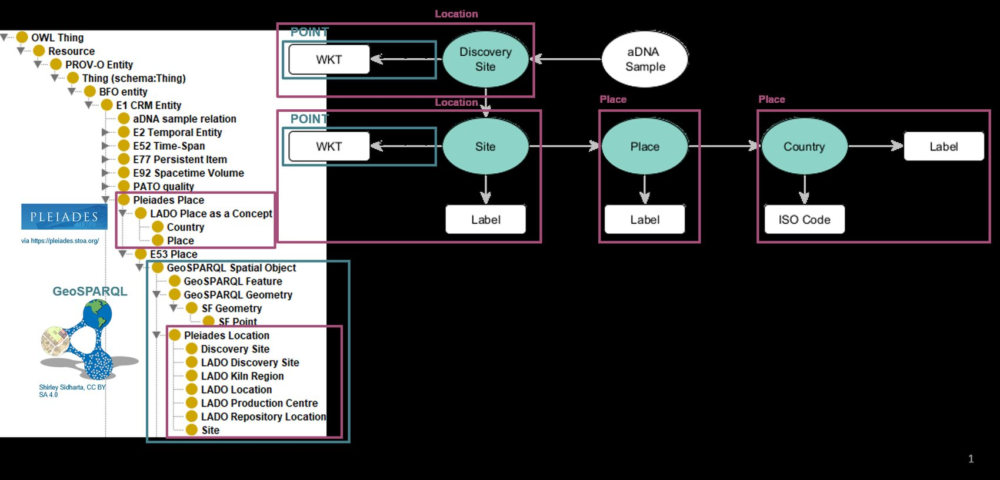
The mapping of the spatial node types of the HIN networks schema (on the right) to the hierarchical ArNO ontology classes. Licence -- Mattis thor Straten et al., CC BY 4.0.

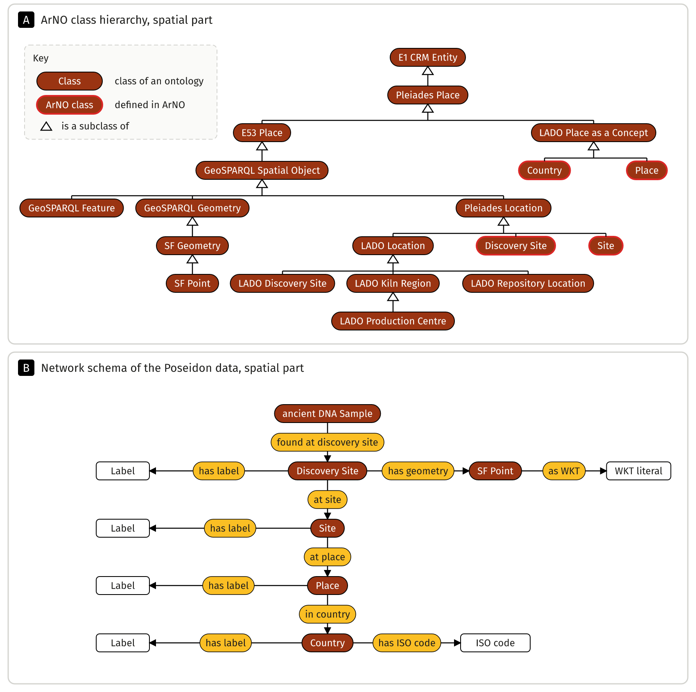
Spatial classes of the Archaeo-Natural Ontology (ArNO) and their use in the Poseidon network schema. (A) Class hierarchy: hollow arrows point from a subclass to its superclass; the four classes defined in ArNO (red outline, Discovery Site, Site, Place, Country) sit below the Pleiades, LADO, GeoSPARQL and CIDOC CRM classes that they extend. (B) The spatial node types of the Poseidon network: an ancient DNA sample is found at a discovery site, which lies at a site, at a place, in a country; the discovery site has a point geometry with a WKT literal, and the nodes carry labels and, for the country, an ISO code. Dark orange: classes; white: literals; amber: object and data properties. Redrawn after Mattis thor Straten et al. (2025) from ArNO and poseidon2lod. Licence: Mattis thor Straten and Florian Thiery, CC BY 4.0.
- Redrawn from data/ArNO.ttl (commit 5b1ad40) and poseidon2lod; the old picture mixed a Protege screenshot with a slide
- Differences to the old picture (to be checked with Mattis thor Straten): only the Discovery Site has a geometry in poseidon2lod (the old picture also gave the Site a WKT point); ArNO.ttl spells disovery in the label of foundAtDiscoverySite (corrected in the figure)
- Licence of the old picture: Mattis thor Straten et al., CC BY 4.0; the new figure is a redraw, say so in the caption
New Z2 One Ogham stone in five modelling styles new figure ready
§3 or §4 (placement open)

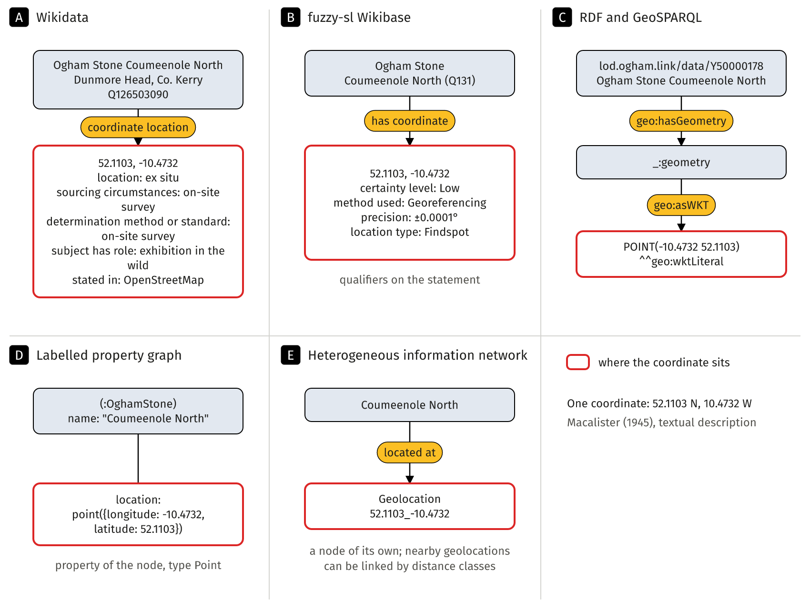
One coordinate in five modelling styles, shown for the Ogham stone Coumeenole North (Macalister 1945, textual description). (A) Wikidata: coordinate location with its qualifiers. (B) fuzzy-sl Wikibase: the coordinate statement carries certainty level, method, precision and location type as qualifiers. (C) RDF with GeoSPARQL: the point is a geo:asWKT literal of a geometry resource. (D) Labelled property graph: the point is a property of the node. (E) Heterogeneous information network: the point is a node of its own, so that nearby geolocations can be linked by distance classes. Red outline: where the coordinate sits. Data: Wikidata (CC0), fuzzy-sl Wikibase, Florian Thiery, CC BY 4.0.
- Panel A read from data/wd/ (fetch_wd.py, run on the Windows machine)
New Z3 Where the showcases are new figure ready
§5 (overview)

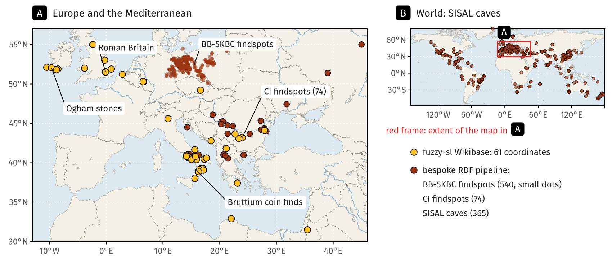
Where the spatial showcases are. (A) Europe and the Mediterranean: coordinate statements of the fuzzy-sl Wikibase (61; Ogham stones, Roman Britain, Bruttium coin finds, Campanian Ignimbrite and others), the Campanian Ignimbrite findspots of the geo-lod graph (74) and the BB-5KBC findspots (540). (B) The 365 SISAL caves of the geo-lod graph; the red frame marks panel A. The property-graph and HIN showcases are not mapped because they have no point dataset of their own. Base map: Natural Earth, public domain.
- Colour = infrastructure (Wikibase vs. bespoke RDF pipeline); LPG and HIN showcases have no point data